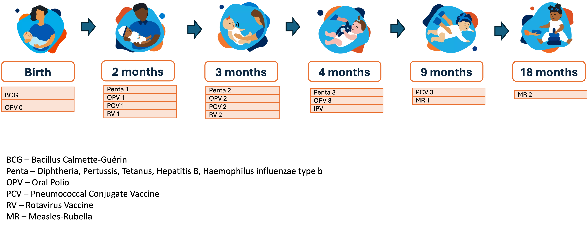
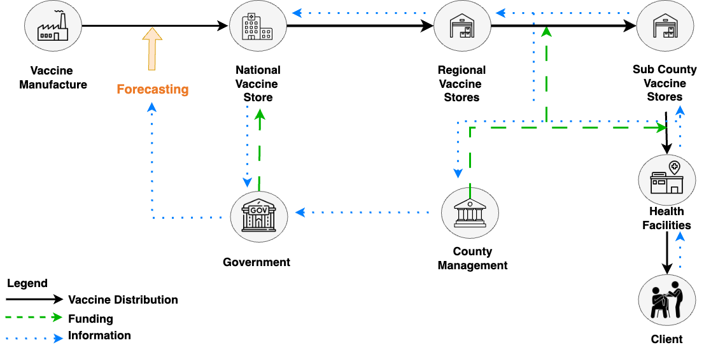
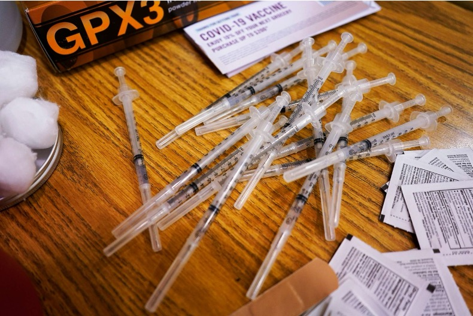
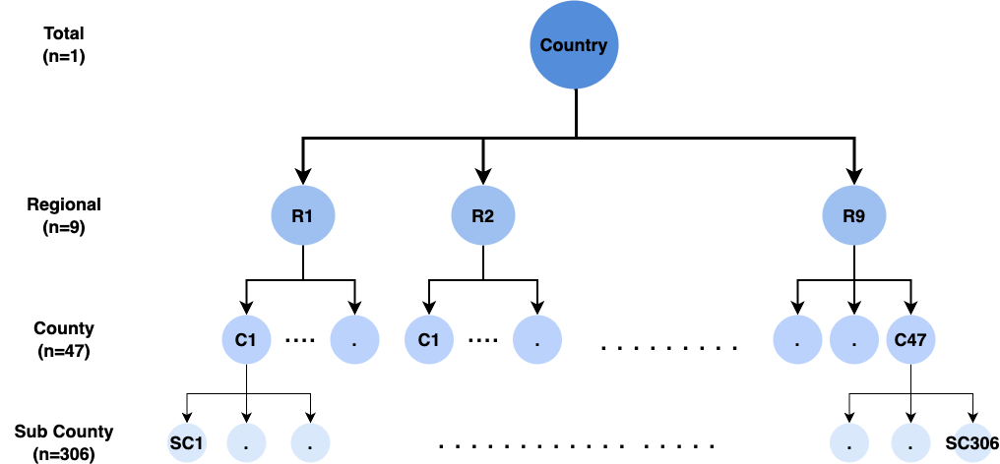
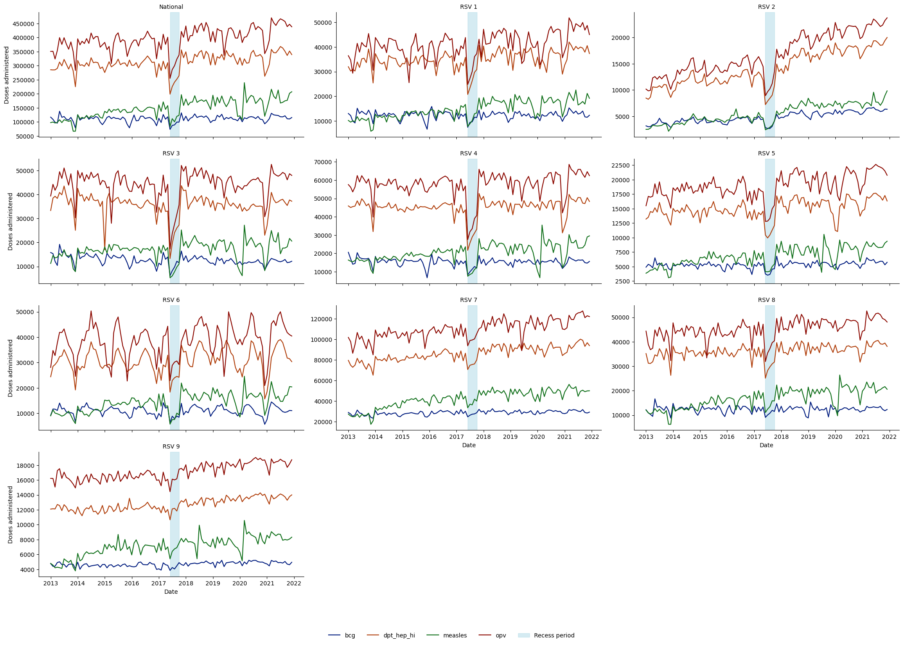
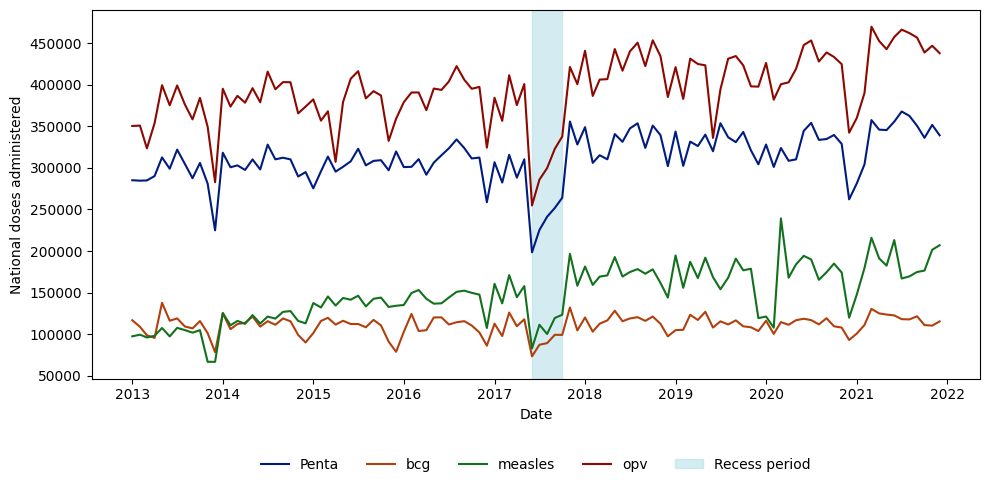
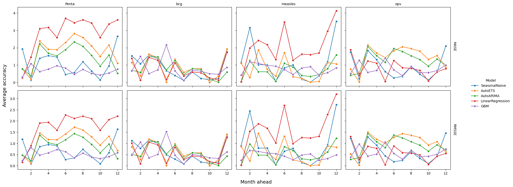
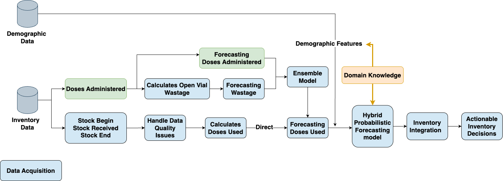

| Reference | Method | Variable | Inputs | Time | Horizon | Hierarchical | Level | Probabilistic | Metric |
|---|---|---|---|---|---|---|---|---|---|
| Chiu et al. (2008) | ARIMA, BPNN, ARIMAT | Total annual vaccine demand | Historical births, doses, wastage, CDC rules | Annual | 1 year | Yes | Regional | No | Average error rate |
| Kotagiri et al. (2011) | Birth pop.-based model | Births | Early birth info | NA | NA | No | Local | No | Impact on vaccine inventory levels |
| Mueller et al. (2016) | Pop.-based model | Quantity of vaccines needed | Scaled census cohort data | Monthly | 12 months | Yes | Local | No | Vaccine availability, Missed Vaccination Opportunities (MVO) |
| Azadi et al. (2018) | Regression models | Childhood immunization demand | Population size, poverty, literacy, clinics | Monthly | NA | No | Regional | No | Not available |
| Cernuschi et al. (2018) | Pop.-based model | BCG vaccine demand | UNPD forecast, EPI schedule, WHO coverage/wastage | Annual | 14 years | No | National | No | Comparison with historical procurement |
| Alegado & Tumibay (2020) | ARIMA, MLPNN | BCG vaccine demand | Monthly vaccination data | Monthly | 12 months | No | Local | No | RMSE, MAE |
| Colrain et al. (2020) | Stat./Probabilistic (Binomial) | Expected doses used/wastage | Birth cohort, sessions, vials, discard time | Annual | 1 year | Yes | Local | Yes | Wastage rate comparison, sensitivity analysis |
| Hariharan et al. (2020) | RFR | Vaccine utilization | Health facility data, date parts, rolling avg. | Biweekly | NA | No | Local | No | Forecasting error (FE), RMSE |
| Sahisnu et al. (2020) | ARIMA | Vaccine stock levels | Stock history data | Monthly | 10 months | No | Local | No | MAPE |
| Vinitha et al. (2024) | LR, RF, GBM, SVR, LSTM, ANN | Infant vaccination demand | Vaccine name, district, intake date | Monthly | NA | No | Local | No | RMSE, R-Square |
Missed in the Numbers:
Quantifying Demand Gaps in Routine Immunisation
Udeshi Salgado
Data Lab for Social Good Research Group
Cardiff Business School, Cardiff University, UK
Lead Supervisor: Professor Bahman Rostami-Tabar
Co-supervisors: Dr Thanos E Goltsos, Dr Geraint Palmer, Dr Xun Wang
2025-06-24
Outline
- Immunisation Supply Chain
- (Forecasting) Problem
- Methodology
- Model Performance Evaluation
- Way Forward

Background
- 1 in 5 children worldwide lack access to lifesaving vaccines.
- Globally, in 2023, 14.5 million children were zero-dose.
- An additional 6.5 million children are partially vaccinated.
- Annually, 1.5 million children under five die from vaccine-preventable diseases.
source: WHO
What is Routine Immunisation?
- Regular administration of vaccines for infants, children, and adults
- Builds population immunity and prevents disease
- Immunisation at birth is critical
- Newborns are highly vulnerable to severe infections
- Delays can lead to serious illness or death
- Newborns are highly vulnerable to severe infections
Most Countries Recommended Vaccine Schedule

source: CDC
Why Routine Immunisation
- Solving the problem at the start:
- Fewer vaccine-preventable deaths.
- Lower immediate and long-term costs from illness and complications.
- Reduces future social and economic burden.
- Each dollar spent on immunization saves $52 in low- and middle-income countries (source: CDC)
Potential Causes
- Vaccine hesitancy and misinformation
- Geographic inaccessibility and conflict zones
- Weak health infrastructure and limited cold-chain capacity
- Supply chain inefficiencies
Supply Chain Inefficiencies
- Inadequate infrastructure
- Weak distribution systems
- Poor data management
- Insufficient funding
- Lack of trained personnel
- Inaccurate/outdated forecasting
The Immunisation Supply Chain

Outline
- Immunisation Supply Chain
- (Forecasting) Problem
- Methodology
- Model Performance Evaluation
- Way Forward
Vaccines

Vial
Dose

Administered
Wastage

Open Vial
Closed Vial
What we want to forecast?
What we want to forecast?
\[ \text{Doses Need} \quad = \quad \text{Doses administered} \quad + \quad \text{Wastage} \]
Current Approaches in Practice
- Countries use a range of forecasting tools to support national immunisation planning and funding requests.
- These tools are developed by global partners including UNICEF, Gavi, the Vaccine Alliance, and John Snow, Inc. (JSI).
- The most common tools include:
- Expanded Programme on Immunisation (EPI) Log Tool (Incorporated in the FSP Tool)
- Forecasting and Supply Planning (FSP) Tool
- Gavi Vaccine Renewal Allocation Tool
FSP Tool: Forecasting and Supply Planning
- Developed by UNICEF to enhance national capacity in vaccine forecasting and supply planning
- Designed for use by national immunisation programme managers to support multi-year vaccine planning, particularly in low- and middle-income countries
- The FSP Tool combines three forecasting methods
Forecasting Methods in the FSP Tool
The FSP Tool combines three forecasting methods for each vaccine \(i\):
1. Demographic Method
\[
\hat{D}_{\text{demographic},i,t} = \frac{P_t \cdot \text{Coverage}_{i,t} \cdot \text{DosesPerChild}_i}{1 - \text{WastageRate}_{i,t}}
\]
where:
- \(\hat{D}_{\text{demographic},i,t}\): Forecasted annual vaccine doses used demand for vaccine \(i\) in year \(t\) using demographic approach
- \(P_t\): Target population (e.g., surviving infants) in year \(t\)
- \(\text{Coverage}_{i,t}\): Coverage rate for vaccine \(i\) in year \(t\)
- \(\text{DosesPerChild}_i\): Number of doses required per child for vaccine \(i\)
- \(\text{WastageRate}_{i,t}\): Expected wastage rate for vaccine \(i\) in year \(t\)
2. Consumption-Based Method
\[
\hat{D}_{\text{consumption},i,t} = \text{AvgYearlyIssues}_{i} \cdot \frac{1}{\text{StockAvailability}_{i,t}}
\]
where
- \(\hat{D}_{\text{consumption},i,t}\): Forecasted annual vaccine doses used demand for vaccine \(i\) in year \(t\) based on consumption
- \(\text{AvgYearlyIssues}_{i,t}\): Historical average yearly vaccine issues for vaccine \(i\)
- \(\text{StockAvailability}_{i,t}\): Proportion of the year \(t\) vaccine \(i\) was available (i.e., no stockout)
3. Session-Based Method
\[
\hat{D}_{\text{session},i,t} = \frac{\text{Sessions}_{i,t} \cdot \text{ChildrenPerSession}_{i,t} \cdot \text{DosesPerChild}_i}{1 - \text{WastageRate}_{i,t}}
\]
where:
- \(\hat{D}_{\text{session},i,t}\): Forecasted annual vaccine doses used demand for vaccine \(i\) in year \(t\) using session planning
- \(\text{Sessions}_{i,t}\): Number of planned vaccination sessions for vaccine \(i\) at year \(t\)
- \(\text{ChildrenPerSession}_{i,t}\): Children vaccinated per session for vaccine \(i\) at year \(t\)
- \(\text{DosesPerChild}_i\): Number of doses per child for vaccine \(i\)
- \(\text{WastageRate}_{i,t}\): Expected wastage rate for vaccine \(i\) at year \(t\)
Final Forecast Combination (Hybrid Approach)
The FSP Tool combines all three forecast methods using weighted averaging:
\[ \hat{D}_{\text{final},i,t} = w_1 \cdot \hat{D}_{\text{demographic},i,t} + w_2 \cdot \hat{D}_{\text{consumption},i,t} + w_3 \cdot \hat{D}_{\text{session},i,t} \]
where
- \(\hat{D}_{\text{final},i,t}\): Final forecasted annual vaccine doses used demand for vaccine \(i\) in year \(t\)
- \(w_1, w_2, w_3\): Assigned weights for the demographic, consumption-based, and session-based
Gavi Vaccine Allocation and Renewal Tool
- Developed by Gavi, the Vaccine Alliance to guide financial support for country immunisation programmes
- Used by national governments and Gavi to estimate routine vaccine needs and determine multi-year funding allocations for Gavi-supported vaccines
Forecasting Equation Used in the Tool
For multi-dose vaccine \(i\):
\[ \hat{D}_{i,t} = \lceil \hat{SI}_t \times (d_i - 1) \times c_{i,t,1} \times (1 + w_i) + \hat{SI}_t \times c_{i,t,2} \times (1 + w_{i,t}) \times \left(1 + \frac{b_{i,t}}{12}\right) \rceil \]
Where:
- \(\hat{D}_{i,t}\): Forecasted annual vaccine doses used demand for vaccine \(i\) in year \(t\)
- \(\hat{SI}_t\): Estimated surviving infants in year \(t\)
- \(d_i\): Total doses required per child for vaccine \(i\)
- \(c_{i,t,1}\): Coverage of the first dose of vaccine \(i\) at year \(t\)
- \(c_{i,t,2}\): Coverage of the last dose of vaccine \(i\) at year \(t\)
- \(w_{i,t}\): Vaccine wastage rate of vaccine \(i\) at year \(t\)
- \(b_{i,t}\): Buffer stock duration in months for vaccine \(i\) at year \(t\)
Comparison of Forecasting Tools
| Tool | Output.Variables | Input.Variables | Forecast.Horizon | Time.Granularity | Forecasting.Method | Vaccines.Targeted |
|---|---|---|---|---|---|---|
| FSP (Forecasting and Supply Planning) Tool | ||||||
| FSP Tool – Demographic Method | Forecasted vaccine doses based on population targets | Population growth, birth cohort, surviving infants, wastage rate, doses per schedule | 3–5 years | Yearly | Demographic | BCG, Penta, OPV, Measles, PCV, Rotavirus |
| FSP Tool – Consumption-Based Method | Forecasted vaccine doses based on historical usage adjusted for stockouts | Average yearly consumption, stockout days, wastage | 3–5 years | Yearly | Consumption-based | BCG, Penta, OPV, Measles, PCV, Rotavirus |
| FSP Tool – Session-Based Method | Forecasted vaccine doses based on planned session activity | Session frequency, population per session, attendance rate | 3–5 years | Yearly | Session-based | BCG, Penta, OPV, Measles, PCV, Rotavirus |
| Gavi Allocation and Renewal Tool | Annual forecasted vaccine doses used for funding allocation | Surviving infants, coverage (1st/last dose), wastage, buffer stock | 5 years | Yearly | Demographic | Penta, Measles, PCV, Rotavirus |
Literature Review
Literature Review Cont.
| Reference | Method | Variable | Inputs | Time | Horizon | Hierarchical | Level | Probabilistic | Metric |
|---|---|---|---|---|---|---|---|---|---|
| Alegado & Tumibay (2020) | ARIMA, MLPNN | BCG vaccine demand | Monthly vaccination data | Monthly | 12 months | No | Local | No | RMSE, MAE |
| Colrain et al. (2020) | Stat./Probabilistic (Binomial) | Expected doses used/wastage | Birth cohort, sessions, vials, discard time | Annual | 1 year | Yes | Local | Yes | Wastage rate comparison, sensitivity analysis |
| Hariharan et al. (2020) | RFR | Vaccine utilization | Health facility data, date parts, rolling avg. | Biweekly | NA | No | Local | No | Forecasting error (FE), RMSE |
| Sahisnu et al. (2020) | ARIMA | Vaccine stock levels | Stock history data | Monthly | 10 months | No | Local | No | MAPE |
| Vinitha et al. (2024) | LR, RF, GBM, SVR, LSTM, ANN | Infant vaccination demand | Vaccine name, district, intake date | Monthly | NA | No | Local | No | RMSE, R-Square |
What is Missing?
- Tools in practice mainly use population-based forecasting.
- FSP tool combines methods, but weighting is subjective.
- Academic models: mostly population or consumption-based, rarely both.
- No unified model combining population and consumption data.
- Forecasts rarely inform inventory decisions in practice.
What we want to achieve?
High Coverage of the Doses Administrated
✅ Reduce missed opportunities
✅ Accounting for accurate wastage rate
✅ Data-driven buffer stock
✅ Forecasting + inventory integration
Research Questions
RQ1: What is the most suitable consumption-based forecasting model for routine vaccine demand at national level?
RQ2: How can population-based features be effectively combined with consumption-based models to improve forecast accuracy and quantify uncertainty?
RQ3: How can improved probabilistic forecasts be integrated into inventory decision-making for better vaccine supply chain management?
Outline
- Immunisation Supply Chain
- (Forecasting) Problem
- Methodology
- Model Performance Evaluation
- Way Forward
Data
- Vaccine consumption data from an African country (Jan 2013 – Dec 2021)
- Four vaccines:
- Measles~rubella
- BCG – for tuberculosis
- Penta – combination vaccine for diphtheria, tetanus, pertussis, hepatitis B, and Hib
- OPV – oral polio vaccine
Data Structure

Doses administrated: National and Regional

Doses administrated: National

Forecasting Setup
- Forecasting methods: Seasonal Naive, ARIMA, ETS, Linear Regression, Gradient Boosting (GBM, quantile regression)
- Forecast horizon: 12 months
- Target: Doses Administered
- Cross-sectional training across vaccines with monthly data, using an expanding window approach
Performance Evaluation Metrics
Root Mean Squared Scaled Error (RMSSE):
\[ \text{RMSSE} = \sqrt{ \text{mean}(q_j^2) } \]
where
\[ q_j^2 = \frac{e_j^2}{\frac{1}{T-m} \sum_{t=m+1}^{T} (y_t - y_{t-m})^2} \]
Mean Absolute Scaled Error (MASE):
\[ \text{MASE} = \text{mean}(|q_j|) \]
where
\[ q_j = \frac{e_j}{\frac{1}{T-m} \sum_{t=m+1}^{T} |y_t - y_{t-m}|} \]
Outline
- Immunisation Supply Chain
- (Forecasting) Problem
- Methodology
- Model Performance Evaluation
- Way Forward
Performance Metrics
BCG
| Model | MASE | RMSSE |
|---|---|---|
| AutoARIMA | 0.7479 | 0.5460 |
| LinearRegression | 0.7649 | 0.5584 |
| GBM | 0.7888 | 0.5556 |
| SeasonalNaive | 0.8105 | 0.5916 |
| AutoETS | 0.8651 | 0.6315 |
Penta
| Model | MASE | RMSSE |
|---|---|---|
| GBM | 0.6672 | 0.5046 |
| SeasonalNaive | 1.0888 | 0.6681 |
| AutoARIMA | 1.4564 | 0.8937 |
| AutoETS | 1.8076 | 1.1092 |
| LinearRegression | 2.8568 | 1.7530 |
Measles~Rubella
| Model | MASE | RMSSE |
|---|---|---|
| AutoARIMA | 0.6762 | 0.5235 |
| AutoETS | 0.7434 | 0.5756 |
| GBM | 0.7562 | 0.4385 |
| SeasonalNaive | 1.1277 | 0.8731 |
| LinearRegression | 2.0586 | 1.5939 |
OPV
| Model | MASE | RMSSE |
|---|---|---|
| GBM | 0.7442 | 0.5609 |
| LinearRegression | 0.8162 | 0.5696 |
| SeasonalNaive | 0.8791 | 0.6135 |
| AutoARIMA | 1.2962 | 0.9046 |
| AutoETS | 1.4534 | 1.0143 |
Model Performance Over Forecast Horizon

Outline
- Immunisation Supply Chain
- (Forecasting) Problem
- Methodology
- Model Performance Evaluation
- Way Forward
Next Steps

Acknowledgement
- John and Snow Inc (JSI) team
- Dr. Laila Akhlaghi
- Wendy Prosser
About me
Udeshi Salgado
1st year PhD Student
DL4SG, Cardiff University, UK
LinkedIn: udeshi-salgado
Slides: udeshisalgado.github.io/talks
Outline of my talk
- Immunisation Supply Chain
- (Forecasting) Problem
- Methodology
- Model Performance Evaluation
- Way Forward
© 2025 Udeshi Salgado – EURO, Leeds